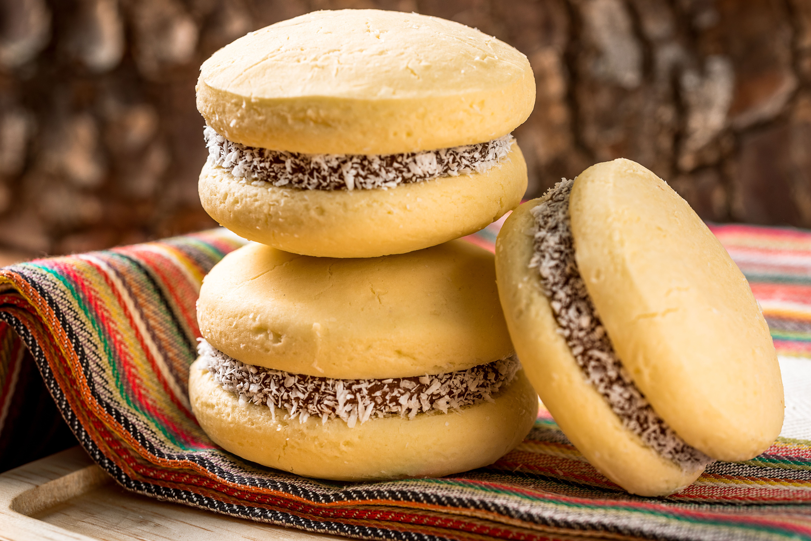

Home
Alfajores de Maicena

Description
Delicate, crumbly cornstarch cookies sandwiched together with dulce de leche and rolled in shredded coconut.
They are perfect with coffee or mate in the afternoon.
Ingredients
- 200 g of cornstarch (maicena)
- 100 g of all-purpose flour
- 100 g of butter, softened
- 100 g of sugar
- 3 egg yolks
- 1 tsp of baking powder
- 1 tsp of vanilla extract
- Dulce de leche, as needed
- Shredded coconut, as needed
Steps
- Cream the butter with the sugar until pale and fluffy.
- Add the egg yolks and vanilla, and mix well.
- Sift in the cornstarch, flour and baking powder, and mix into a soft dough.
- Rest the dough in the fridge for 30 minutes.
- Roll it out to 5 mm thick and cut out circles.
- Bake at 170 °C for 10 to 12 minutes without letting them brown.
- Let the cookies cool, then fill them with dulce de leche.
- Roll the edges in shredded coconut.